Y," which
includes the frequent Japanese particle "." We can derive the
Japanese-to-English transfer knowledge in sample (1) for "X Y"
by referring to sample translations such as "
Y," which
includes the frequent Japanese particle "." We can derive the
Japanese-to-English transfer knowledge in sample (1) for "X Y"
by referring to sample translations such as "ATR has built a multi-language speech translation system called ATR-MATRIX. It consists of a spoken-language translation subsystem, which is the focus of this paper, together with a highly accurate speech recognition subsystem and a high-definition speech synthesis subsystem. This paper gives a road map of solutions to the problems inherent in spoken-language translation. Spoken-language translation systems need to tackle difficult problems such as ungrammaticality, contextual phenomena, speech recognition errors, and the high-speeds required for real-time use. We have made great strides towards solving these problems in recent years. Our approach mainly uses an example-based translation model called TDMT. We have added the use of extra-linguistic information, a decision tree learning mechanism, and methods dealing with recognition errors.
ATR began its study of speech translation in the mid-eighties and has developed a multi-language speech translation system called ATR-MATFIX (ATR's Multilingual Automatic Translation System for Information Exchange). The speech recognition subsystem of the ATR-MATRIX is highly accurate for spontaneous speech. The translation subsystem exploits an example-based approach in order to handle spoken- language. The speech synthesis subsystem has succeeded in high-definition synthesis using a corpus-Lased approach, This paper features the translation subsystem. Please refer to [Takezawa et al., 1999] for information on the speech recognition and synthesis subsystems.
Spoken-language translation faces problems different from those of written-language translation. The main requirements are 1) techniques for handling ungrammatical expressions, 2) means for processing contextual expressions, 3) robust methods for specch recognition errors, and 4) real-time speed for smooth communication.
The backbone of ATR's approach is the translation model called TDMT (Transfer-Driven Machine Translation) [Furuse et al., 1995], which was developed within an example-based paradigm. Constituent Boundary parsing [Furuse and Iida, 1996] provides efficiency and robustness. We have also explored the processing of contextual phenomena and a method for dealing with recognition errors and have made much progress in these explorations.
In the next section, we give a sketch of TDMT. Section 3 presents the contextual processing, section 4 describes the recognition error handling. section 5 explains evaluation measures and the latest performance. In section 6, we state our conclusions.
In TDMT, translation is mainly performed by a transfer process that applies pieces of transfer knowledge of the language-pair to an input utterance. The transfer process is the same for each language pair, i.e., Japanese-English, Japanese-Korean, Japanese-German and Japanese-Chinese, whereas morphological analysis and generation processes are provided for each language, i.e., Japanese, English, Korean, German and Chinese. Next, we briefly explain the transfer knowledge and transfer process.
Transfer knowledge describes the correspondence between source-language
expressions and target-language expressions at various linguistic levels. Source
and target-language expressions are expressed in patterns. A pattern is defined
as a sequence that consists of variables and constituent boundary markers such
as surface functional words. A variable is substituted for a linguistic
constituent and is expressed with a capital letter. such as an X. Let us
look at the Japanese pattern "X Y," which
includes the frequent Japanese particle "." We can derive the
Japanese-to-English transfer knowledge in sample (1) for "X Y"
by referring to sample translations such as "
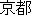
[Kyoto]
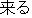
[come]," which is translated to "come to Kyoto," or "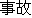
[accident]
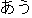
[meet]," to "meet with an accident," etc.1
| X Y ==> |
||||||
| Y' to X' | (([Kyoto] , [come] ), ...). | |||||
| Y' with X' | (([accident] , [meet] ), ...), | (1) | ||||
| Y' on X' | (([Sunday] ,  [go] ), ...), [go] ), ...), |
|||||
| : | ||||||
The above-mentioned transfer knowledge indicates that the source pattern
"X Y" corresponds to many possible target patterns. TDMT
selects the semantically most similar target pattern, and then translates the
input by using the pattern. This is enabled by measuring semantic distance
(similarity) in terms of a thesaurus hierarchy [Sumita and
Iida, 1991].
The transfer process involves the derivation of possible source structures by a Constituent Boundary parser (CB-parser) [Furuse and Iida, 1996] and a mapping to target structures. When a structural ambiguity occurs, the best structure is determined according to the total semantic distances of all possible structures.
Here. we explain how the system transfers the Japanese utterance "
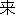
 ." First, the transfer process derives the source structures by
combining such source parts of the transfer knowledge as "X ,"
"X Y," "" and "(
." First, the transfer process derives the source structures by
combining such source parts of the transfer knowledge as "X ,"
"X Y," "" and "(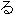
)." Then, based on the results of the distance calculations, the partial source expressions in the source structure are transferred to "please X'." "Y' to X'," "Kyoto" and "come," respectively. The target structure is obtained, by combining these target expressions. The translation output, "Please come to Kyoto," is generated from this target structure.Contextual processing is not peculiar to spoken-language, but demands for contextual processing are usually higher because the dialogue attendants tend to use many anaphoric or elliptical expressions for information that is mutually understood. In various areas including contextual processjng, extra-linguistic information is important and utilized in our approach.
Parts of utterances are often omitted in languages such as Japanese, Korean, and Chinese. In contrast, many Western languages such as English and German do not generally permit these omissions. Such ellipses must be resolved in order to translate the former languages into the latter. We present an automated method of ellipsis resolution using a decision tree [Yamamoto and Sumita, 1998]. The method is superior to previous proposals because it is highly accurate and portable due to the use of an inductive learning technique.
Consider the Japanese utterance in sample (2):
| customer: | 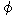 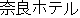 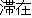 |
(2) | |
| [I am staying at the Nara Hotel.] |
The subject is omitted in the above utterance. i.e., it is not explicitly expressed who stays at the Nara Hotel. However, native speakers understand that it is the speaker of the utterance who stays there. In order to determine the subject of the utterance. it is necessary to consider various information surrounding the utterance, i.e.,
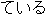
-" and "-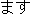
,"We have to determine the subject by considering the above elements in parallel. A manual rule construction of ellipsis resolution is a difficult and time-consuming task. With this in mind, a machine-learning approach has been utilized. Since various elements should be considered in resolving ellipses. it is difficult to exactly determine their relative degrees of influence. However, building a decision tree using a tagged training set automatically gives weight to every element through the criterion of entropy.
We conducted experiments on utterances that had not been subjectcd to decision-tree learning. The attributes used in decision tree were the speaker's role (a clerk or a customer), the verb, the honorific speech pattern, the case markers and so on, The results revealed that the ellipsis was correctly resolved in 80% of the cases. Having verified that high accuracy can be obtained, the ellipsis resolution system was then incorporated into the Japanese-to-English and Japanese-to-German translation systems. We also believe that this approach is applicable to other languages, such as Korean or Chinese.
As mentioned above, the speaker's role plays a central role in ellipsis resolution. This provides us with evidence that extra-linguistic information including the speaker's role, gender and so on are important in spoken-language translation [Mima et al., 1997]. We have been trying to design a transfer method in dialogue translation according to the speaker's role. We have been paying particular attention to the "politeness" problem, because the abuse of polite expressions can interfere with a smooth conversation between two parties. especially two parties involved in business, such as a clerk and a customer. Our preliminary experiment has given us promising results.
We have proposed a corpus-based anaphora resolution method that combines a machine learning algorithm with a statistical preference scheme [Paul et al., 1999].
Our training data consist of Japanese spoken-language dialogues [Takezawa, 1999] annotated with coreferential tags. Besides the anaphora type (pronominal, nominal. ellipsis). we also include morphological information like stem form and inflection attributes for each surface word as well as semantic codes for content. words [Ohno and Hamanishi, 1981] in this corpus. Based on the corpus annotations, we extract the frequcncy information of coreferential anaphora-antecedent pairs and non-referential pairs as well as the relative distance between the anaphora and the candidates from the training data.
This knowledge is utilized to train a decision tree on the determination of coreferential relationship for a given anaphora and an antecedent candidate. Thus. the relevance of the respective features for the resolution task is automatically extracted from the training data.
In our resolutlon approach. we argue for a separation of the analysis of coreferential relationships and the determination of the most salient candidate, In the first step, we apply the decision tree as a coreference filter to all possible anaphora-candidate pairs in the discourse. In this step, irrelevant candidates are filtered out to reduce noise for the preference selection algorithm. In the sccond step, the preference selection is achieved by taking into account (I) the frequency information of the coreferential and non-referential pairs that were tagged in the training corpus and (II) the distance features within the current discourse.
Sample (3) contains two anaphoric expressions. i.e. (I) the pronoun
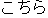
[here] in utterance (iii), which refers to the proper noun [Nara hotel], and (II) the omitted direct object (ellipsis) of utterance (iv), which refers to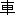
[car] in utterance (i). The underlined nominal expressions preceding the respective anaphora in the discourse form the set of possible candidates.
| customer: | (i) | 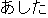 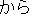 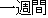  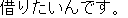 |
(3) | |
| [I would like to rent a car for one week from tomorrow on.] | ||||
| (ii) | 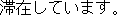 | |||
| [I am staying at the Nara Hotel.] | ||||
| (iii) |  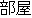 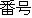 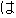 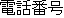 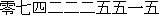 | |||
| [The room number here is 407 and the telephone number is 0742-22-5515.] | ||||
| clerk: | (iv) | 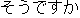 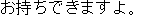 | ||
| [I see. We can bring it to the Nara Hotel.] |
In the case of the pronominal anaphora [here] of this sample, it is sufficient to resolve the antecedent as the most recent candidate in the discourse. However, this straightforward resolution scheme has a low success rate due to its application to the unfiltered set of candidates resulting in the frequent selection of non-referential antecedents.
For example, the set of possible antecedents for the ellipsis anaphora in utterance (iv) consists of the ten underlined nominal expressions above. The most recent one is [Nara hotel], which should not be considered as the direct object of the transitive verb
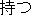
[to bring], because of its semantic attributes. In this example, the coreference filter successfully reduces the candidate set to two potential candidates, i.e. [number] and [car].Our preference selection scheme assigns a saliency value to the remaining candidates. This value is based on the occurrence of similar corefercnces in the training data as well as the relative position of the respective candidate in the current discourse defining a balance between frequency statistics and recency constraints. Therefore, the candidate [car] is selected correctly in our example as the antecedent of the omitted direct object instead of the more recent candidate [number].
We proved the applicability of our approach to Japanese pronoun resolution, which achieved a resolution accuracy of around 80%. Moreover, we believe our knowledge poor approach is adaptable to other tasks, domains and even different languages.
Despite recent progress in speech recognition technology, recognition errors have still not been eradicated and remain a problem in the near future. Thus, several methods using syntactic constraints based on context-free grammar have already been proposed to cope with this situation and their effectiveness has been confirmed in [Lavie et al., 1996] [Mellish, 1989] [Saitou and Tomita, 1988]. In contrast to these approaches. the ATR-MATRIX uses not only syntactic constraints but also semantic constraints given by an example-based approach. First, we proposed to translate only parts that are considered to be correct (Partial Translation). Secondl we proposed to translate larger portions of utterances by recovering errors (Recovered TranslatIon),
Speech recognition errors not only discontinue parsing but also generate erroneous translations. To overcome this problem, we have proposed a method that translates only parts that are decided to be correct according to semantic consistencies (Partial Translation) [Wakita et al., 1997]. In this method, the dependency structurc for the input utterances is obtained by using a CB-parser. The reliable sub-structures are extracted from the original structures according to the size and semantic distances. The conditions used for selecting reliable sub-structures are as follows, (I) The summation of all the semantic distances for the dependencies of the sub-structure is smaller than the threshold A. (II) The count of words in the structures is larger than the threshold B. A and B are 0.2 and 3, respectively, in the experiment.
Figure 1 shows an example of Partial Translation in an English-to-Japanese (EJ) translation. The input sentence "He says the bus leaves Kyoto at 11 a.m." is recognized as "He sells though the bus leaves Kyoto at 11 a.m.." The solid lines in Figure 1 indicate dependency structures and the real number for each structure denotes the corresponding semantic distance value. The dotted line indicates the failure. In this example. the analysis of the whole sentence fails due to the misrecognition "sell though." The distance value of the longest part, "though the bus leavcs Kyoto at 11 a.m.," is thought to include erroneous words because the distance value 0.4 is larger than threshold value A. Then, we step to the next longest part "the bus leaves Kyoto at 11 a.m.." This part is extracted as a correct part, because the distance 0.013 is under threshold value A. The isolated part "He sells" is also evaluated. The distance of the part. "He sells" is under threshold value A, but the part includes only two words under threshold B, so the part "He sells" is regarded as erroneous.
| A. Threshold value of semantic distance for correct parts = 0.2 | |||||||||
| B. Threshold of word count for correct parts = 3 | |||||||||
| |||||||||
It has been confirmed that the proposed method can largely reduce the rate of misunderstanding for translations of erroneous utterances. This method enables users to continue a conversation without silent stand-stills even when recognition results are terribly erroneous.
Recently, we have proposed a method for recovering from speech recognition errors [Ishikawa et al., 1999]. Humans usually recover from misheard parts in speech by creating hypotheses about the original utterances based on expressions familiar to them. Likewise, we assume that a computer can recover from an error using text corpora. To do this, the word sequences of recognition results are corrected using phonetically similar examples in the text corpora. The reliability of each correction is decided according to its semantic consistency and phonetic similarity to the recognition result.
The proposed method is composed of the following three steps: (i) deciding the necessity of correction for the input, (ii) creating correction hypotheses, and (iii) deciding the reliability of each hypothesis. In step (i), the recognition result is parsed using a CB-parser, and the necessity is decided according to the total value of semantic distances obtained from the parsing results. The correction hypotheses are created in step (ii). The correction parts are decided according to the dependency structure, and the hypotheses are created by replacing the parts with phonetically similar word sequences in the text corpus. In step (iii), each correction hypothesis is parsed in the same way as in step (i). The correction hypotheses are thought to be reliable when their semantic distances and phonetic distances are under threshold values, C and D, which are 1.0 and 0.3. respectively, in the experiment.
Figure 2 shows an example of Recovered Translation in a Japanese-to-English (JE) translation. The recognition result and the translation result are erroneous.
| |||||||||||||||||||||||||||||||||||||||||||
In step (i), the recognition result is decided to be recovered because the total value of semantic distance, 1.30, is larger than threshold value C.
The corrcction hypotheses of the input are created in step (ii). Here. three
candidates that are phonetically similar to the correction part "
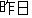
" are shown, i.e., " [preference for a room]", " [to
the room]", and " [a room]". By replacing the correction part with
these candidates, we obtain three correction hypotheses. The phonetic similarity
of each hypothesis to the recognition result is evaluated as the "edit" distance
between the phoneme sequence of the recognition result and the phoneme sequence
of the hypothesis. Here. the hypothesis with " " has the smallest
value, 0.13, which is smaller than threshold D.
In step (iii), the most reliable correction hypothesis is output as the final
correction result. The reliability of each hypothesis is decided according to
its total semantic distance and phonetic distance. The hypothesis
"
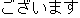
 " is selected. Then, the translation result from this
correction "Are there preferences for a room?" is finally obtained.
" is selected. Then, the translation result from this
correction "Are there preferences for a room?" is finally obtained.
In a preliminary experiment, we compare the translation qualities for a translation without/with correction. With correction, the translation qualities increased about 10% of the time. These results show the validity of the proposed method.
Currently, the TDMT system addresses dialogues in the travel domain, such as travel scheduling, hotel reservations, and trouble-shooting. We have applied TDMT to four language pairs: Japanese-English, Japanese-Korean [Furuse et al., 1995], Japanese-German [Paul, 1998] and Japanese-Chinese [Yamamoto, 1999]. Table 1 shows the transfer knowledge statistics.2 Training and test utterances were randomly selected per dialogue from our speech and language data collection that includes about 40 thousand utterances in the travel domain [Takezawa, 1999]. The coverage of our training data differs among the language pairs and varies between about 3.5% and about 9%.
| Count | JE | JG | JK | EJ |
| Words | 15063 | 15063 | 15063 | 7937 |
| Patterns | 1002 | 802 | 801 | 1571 |
| Examples | 16725 | 9912 | 9752 | 11401 |
| Trained Utterances | 3639 | 1917 | 1419 | 3467 |
A system dealing with spoken-dialogues is required to realize a quick and informative response that supports smooth communication. Even if the response is somewhat broken, there is no chance for manual pre/post-editing of input/output utterances. In other words, both speed and informativity are vital to a spoken-language translation system. Thus. we evaluated TDMT's translation results for both time and qualily.
Three native speakers of each target language manually graded translations for 23 unseen dialogues (330 Japanese utterances and 344 English utterances. each about 10 words). During the evaluation, the native speakers were given information not only about the utterance itself but also about the previous context. The use of context in an evaluation, which is different from typical translation evaluations, is adopt ed bccause the users of the spoken-dialogue system consider a situation naturally in real conversation.
Each utterance was assigned one of four ranks for translation quality: (A) Perfect : no problems in both information and grammar; (B) Fair: easy-to-understand with some unimportant information missing or flawed grammar; (C) Acceptable: broken but understandable with effort; (D) Nonsense: important information has been translated incorrectly. Here we show samples for each rank containing information about 1. input, 2. system translation, 3. human transIation, and 4. explanation.
| 1. | " 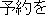 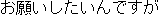 " | |
| 2. | "Hello, I'd like to make a reservation for a room." | |
| 3. | "Hi, I'd like to make a reservation." | |
| 4. | The translation 2. is correct to the point that it could be understood by an English speaker. However, a "natural" translation could be 3. |
| 1. | " 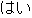 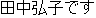 " | |
| 2. | "Yes. I'm Hiroko Tanaka." | |
| 3. | "Yes, my name is Hiroko Tanaka." | |
| 4. | This translation is a slightly wrong, since "my name is" or "this is" should be used instead of "I'm." However, native speakers can understand the translation as soon as they read it. |
| 1. | " 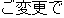 " | |
| 2. | "Yes, from when change are you?" | |
| 3. | "Yes, and from when would you like to change your reservation?" | |
| 4. | This translation is poor. However, native speakers can understand it and receive important information if they consider the situation in the conversation. |
| 1. | " 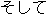 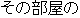 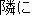 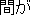 " | |
| 2. | "And, there is between the tatami the next the room." | |
| 3. | "And, there is a tatami room next to that room." | |
| 4. | This translation gives no information, since it has a strange word order, wrong word selection ( "" should be "tatami room." ). |
Table 2 shows the latest evaluation results for TDMT, where the "acceptability ratio" is the sum of the (A), (B) and (C) ranks. The JE and JG translations achieved about 85% acceptability and the JK and EJ translations achieved about 90% acceptability. JK's superiority is due to the linguistic similarity between the two languages: EJ's superiority is due to the relatively loose grammatical restrictions of Japanese.
| JE | JG | JK | EJ | |
| A (%) | 43.4 | 45.8 | 71.0 | 52.1 |
| A+B (%) | 74.0 | 65.9 | 92.7 | 88.1 |
| A+B+C (%) | 85.0 | 86.4 | 98.0 | 95.3 |
| Time (Seconds) | 0.09 | 0.13 | 0.05 | 0.05 |
The translation speed was measured on a PC/AT PentiumII/450MHz with 1GB of memory. The translation time did not include the time needed for a morphological analysis, which is much faster than a translation. Although the speed depends on the amount of knowledge and the utterance length, the average translation times were around 0.1 seconds. Thus, TDMT can be considered to be efficient.
This paper has described a TDMT approach to spoken-language translation. This approach was implemented, evaluated and incorporated into a multi-language speech translatlon system called ATR-MATRIX. The effectiveness of the approach was confirmed. However, it is still just a small step forward in the developing frontier of speech translation.
The authors would like to thank Kadokawa-Shoten for providing us with the Ruigo-Shin-Jiten. We also thank all previous members of this project, including Hideki Mima, Yumi Wakita, Osamu Furuse and Hitoshi Iida.